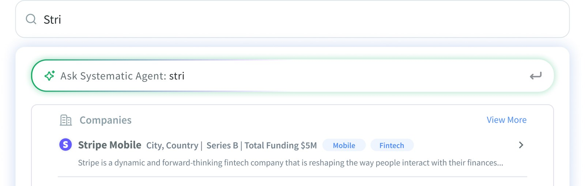

01
Chat on top of search, not a redesign
Chat opens from the search bar or the Ask Agent button. Start typing and the first row offers “Ask Systematic Agent”, with company and investor results right below.
When the panel is collapsed and a reply lands, Ask Agent gets a bell and a highlight. It doesn't pull you out of what you're doing.
- Tried
- A full search redesign, and chat as an overlay
- Dropped
- The full redesign
- Why
- Lower adoption risk while the new flow proved itself. Nobody was forced into chat on day one.


Default

New reply while collapsed